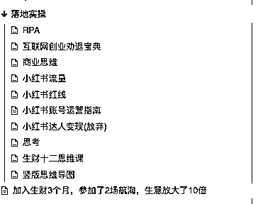
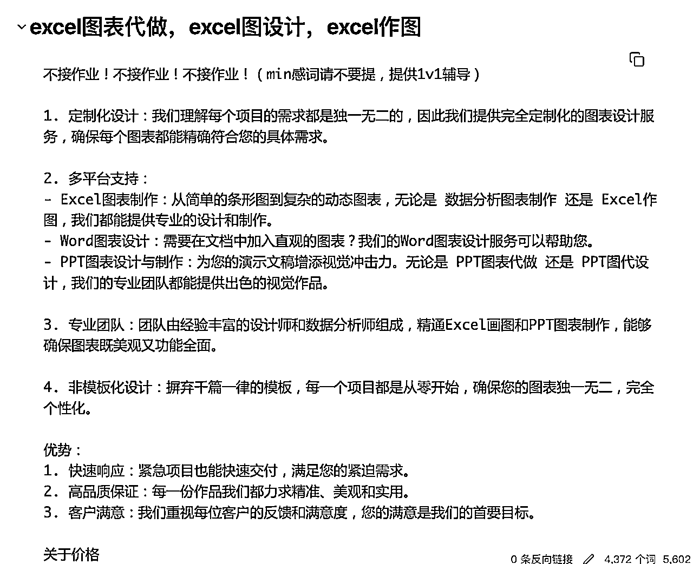

来源：https://ewtk6agpo4c.feishu.cn/docx/NSI2dZu4hojlDPxcYrOcPxA7nSf
大家好我是悦悦子Cheer，有4个斜杠身份，副业是做数据分析可视化，2023年副业收入4.5万，加入生财就是希望能把业务放大，突破1-10，10-100。
斜杠身份
🔴会展行业的Marketing Manager
🟢可视化设计师，数据分析师
🟠AIGC创作者
⚫️小红书,B站知识区UP主
🌈小红书1月连续8篇爆文，涨粉近7K
💰60天询盘破200，成交超20K
🚢GPT提效和AI编程航海 都是TOP5
刚加入生财的时候自我介绍，根本没有拿得出手的东西，但是也就过了一个多月，我发现我可以有东西写了，就更新了自我介绍的版本，毕竟大家总是会被结果所吸引。
我没有月入十万，也没有年收入百万，除了小红书看快速暴涨，能够“拿得出手”以外，别的，跟大家的成绩比真的很普通。
能被看见的始终都是少数，努力以后有结果并且结果很不错的，也是少数，所以，希望进入生财没找到项目的圈友们，不要焦虑！
见过面没见过面的圈友都有跟我聊过，关键词都是“迷茫”
“项目太多，学不过来”
“都试过，还没跑通0-1”
“特别焦虑，被整EMO了”
没有跟大家聊之前，我的感觉一直都是“如鱼得水”。
我是一个执行力不差，学习能力强的人。我最大的毛病就是喜欢自己瞎琢磨，而且很轴，也不喜欢冲浪，导致我过去的几年都是在积累技能性的经验，0基础学习了代码，数据分析。缓慢开始了用自己的技能接单，23年的收入不算差，但是真的很累，也很迷茫，不知道该往哪里走。
在搞钱女孩的线下聚会认识了楠姐，知道了生财以后，立刻加入。因为我隐约觉得这个地方，有我需要的东西。进来以后，确实找到了我要的东西，于是开始不吃不喝不睡觉的学习？
进入生财之前，我非常清楚自己的需求，我的目的就是“我已经跑通了0-1，在生财我需要放大，跑通1-10”。
我猜测很有可能就是因为我有一个明确的目的，清晰的目标，所以我进来以后不迷茫，“放大项目”是我的锚点。
所以看到这篇文章的你，在迷茫，我猜大概率是你没找到自己锚点，那就尝试找一下呗。
生财也有超多介绍到底该怎么使用生财，怎么去链接大佬，怎么把生财用好，可是有时候东西越多，越觉得焦虑，因为太多了，不知道怎么选择。强烈推荐小鹅的这篇一个19岁的航海教练想聊聊怎么用好生财有术
我的做法是，一个个来，落到实处，认真对待自己的每一个行动。
新人融入营的7天任务，很好的帮助我推开了生财的大门，自我介绍也好，链接人也好，路径清晰，如果你糊弄了这7天的任务，真的可以回头再去看看，仔细拆解这7天的路径，太绝了！
回到锚点，想清楚自己到底要什么，不断wbs，最终得到一个可实操的目标：副业一年挣3万，每个月挣2500，每个周挣600.
有了锚点以后，要做的就是专注！这个是程太点醒我的，从0-1不容易，如果已经跑通了0-1，那就继续专注放大的过程，不要东一榔头西一棒子的。生财里面最不缺的就是发财的路子，看大家的业务挣那么多很难不心动的去尝试，我一开始也是做各种乱七八糟，想着同时都做（具体可以看看这篇终于来交作业了！）
结果当然是什么都没做好咯！程太一语道破，我的问题不专注啊！我的初心是 放大我业务，我做的任何事情都应该优先服务我的业务，或者以业务为中心拓展和发散。
回顾我的路线，我知道自己要解决流量问题，所以刚进入生财我就把“SEO合集”看完了，在看SEO的过程中接触到了RPA，机器流程自动化，感觉非常的解放双手，就进一步把“RPA合集”看完了。看完了这两个以后，小红书的流量开始有变化了。因为本身就是AI重度使用者，3月份之前的gpt在我这就是傻乎乎的，我知道是自己的问题，所以这一块在航海之前我就又看完了“GPT合集”，随后也加入了2个AI的航海。
seo合集
rpa合集
ai提示词合集
小红书影刀手机自动化爬数据
chat gpt提效
生财内容这么多，我怎么确定的我到底学什么？从解决问题出发。
我要解决我业务的流量问题，做流量我需要学什么？我看到了SEO，所以我学了。
一个人，没有团队，没有过多的时间，怎么做运营，我了解到了RPA，所以我学了，（连续学了3周，直接考了证书，hin不错）
AI时代，我必须要让AI给我打工，所以我找到了“GPT合集”，看完了-学习-使用-输出-用它挣钱
GPT航海过程中，我看到了ai agent，我觉得超有趣！拔刀刘教练的内容，也很吸引我，ai智能体，完全可以充当只能客服的角色，太适合我这个超级兵的状态，所以我加入了刘教练的星球，进一步学习ai agent。
看起来好像很随机，接触到什么就学什么，其实就像我刚开始提到的，我学的，都是围绕我的业务发散的，以上的内容都能帮助我提升做单效率，降低运营难度，因为有锚点，所有的工具就共同发挥作用。
我不喜欢用手机浏览生财，我记性超差的，上午看的，下午就不记得了，明天完全忘光了。我喜欢在电脑上看，并且record！
记录真的超级棒，一方便帮助自己方便回忆，另一方面其实是帮助自己对抗“虚无”和“假象”。（什么假象？自己啥也没干的假象，啥也没学到的假象。短时间内没成果，不代表什么也没干）

我专门用obsidian记录生财的帖子，包括看到好的帖子，没时间阅读的我都会放入我的waiting list。 精华贴我的阅读也都是会拆解，然后记录关键要点。形成一个我的自己知识网络库。
“看过”真的不等于学过，我喜欢看完立刻实操，下图是我看生财思维课的时候 梳理的自己的目标，然后确定我到底要挣钱的目标。落地实操的时候才能够真正的感受到这篇精华贴的魅力！绝不停留在理论和表面。
JUST DO IT
因为在楠姐聚会上对程太影响很深，但那时候没什么机会链接，加入生财以后看到程太的局，立刻就报名了。因为喜欢这个人，所以参加她的局，也因为双方都非常的真诚和投缘，所以我收获了程太有价值的建议，链接上了程太。
（搞钱女孩广州聚会）
（程太的小红书晚饭局）
第二场是瑾糖，糖总是程太推荐给我，因为我跟糖总的业务有相似之处，所以糖总的经验极大程度我都能直接拿来用，也是在糖总的局上，看到了我业务的“未来”。局结束以后，当晚回家就开始了我的咸鱼矩阵，第二天流量就来了！
无论我参加程太，还是参加瑾糖，我都带有目的！认识人，了解业务。所以这两次的聚会，收获都很大，也是因为我带着目的，提问的时候更加精准。
因为时间跟精力有限，所以我会斟酌和复盘，希望每一次都能有收获。
最后一part我想跟暂时还没有业务的圈友们分享一下我的副业这两个月被放大的细节。
正如前文提到，我的服务是代做，代做数据分析，可视化图表。
刚开始接触行业是在淘宝接单，应聘淘宝的写手，在淘宝抢单，单多，价低，耗费精力。需要长期扑在电脑面前，疯狂扣1，竞争很大。
优点：起点低，流量大
缺点：价格低，耗费时间
具体怎么做？
打开淘宝-搜索“excel代做”-找到3家店铺-询问是否需要设计师-加企业微信，进入接单群，开始接单

淘宝接单到手50%，有的甚至只有30%，价格真的非常的低，所以如果自己能拿到流量，那薪水不就翻倍了，所以开始了咸鱼和小红书发广告。
具体怎么做？（咸鱼）
打开咸鱼app-搜索excel代-找到 “想要”最高的宝贝-点击宝贝-卖同款
最快的方式就是直接抄，用人家的文案，用人家的图，然后发布就完了！刚起步，最重要的不是完整，完美，而是finished！
小红书其实也是一样的道理，搜索excel代，数据分析代，就能出现超多。
因为刚起步，咸鱼跟小红书的流量并不大，为了保证总体收入，淘宝平台的也能继续干着
当咸鱼跟小红书开始有流量，并且流量稳定以后，就上矩阵吧（这个就是糖总对我的建议）
具体怎么做？
2个咸鱼账号，发满50个宝贝。
跟第二阶段不同的是，这个时候我们走量，原来可能就挂了几个宝贝，现在就是全部拉满！一开始我是自己用gpt做seo的，很慢！可以说非常慢，根本发不完50个，还好累，效果一般。后来我就继续沿用上面说的，“直接抄”！文案也抄，图片也超，一周就把2个号的50个宝贝发满了。
发满是第一步，因为要继续迭代。每天就观察哪些宝贝的数据不行。强烈推荐大家看看这篇
小白如何快速在闲鱼单月变现4000
我很多咸鱼的技巧就是照着这篇来做的。
发现了数据不行的宝贝，就下架然后再用seo做关键词替换，再继续观察，然后迭代修改。
小红书的路子跟咸鱼真的一直，先找到对标账号，然后抄他，然后自己迭代，超越他
MVP：咸鱼发满50个，小红书发满10条
迭代：数据不好的宝贝，就更换内容，上seo技巧，修改封面图

从“抄”到“超”就是mvp+迭代的过程（这个知识点一直都知道，但是成功的实践是从看完生财思维课开始的）
回到最开始的，为什么觉得如鱼得水，因为我需要的就是方向和方法，而这两样，鱼丸完全帮我整理好了！（各种合集，真的太省事儿了！）
因为都是同类型的人，一方面自己的努力会被认可，另一方面前辈也愿意指导，遇见伯乐的概率更高！
每个人 对生财的评论都不一样，有人觉得很好，有人觉得一般。有人在这里挣了一百万，也有人潜水3年什么都没干。因为我知道自己要什么，而生财恰好给了我想要的，还给了更多附加的！所以我很感激生财
家庭普通且平凡，成长的方式普通且平凡，但就是普普通通愿意努力的人，也能用自己的方式被看见。
找不到伯乐怎么办，那就先增加自己的曝光率！
很感激遇到的所有人，我想把自己的感觉传递下去。